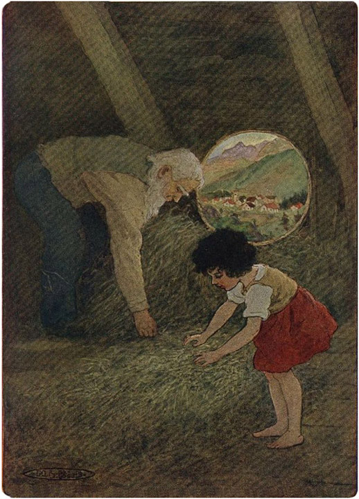

Setelah Deta menghilang, Paman duduk kembali di bangku, menghembuskan asap tebal dari pipanya. Dia tidak berbicara, tetapi terus menatap tanah. Sementara itu, Heidi melihat sekelilingnya, dan menemukan kandang kambing, lalu mengintip ke dalam. Tidak ada apa pun yang terlihat di dalam. Mencari sesuatu yang lebih menarik, dia melihat tiga pohon cemara tua di belakang gubuk. Di sana angin menderu melalui ranting-ranting dan puncak pohon bergoyang ke sana kemari . Heidi berdiri diam untuk mendengarkan. Setelah angin agak mereda, dia berjalan mengelilingi gubuk kembali ke kakeknya. Dia mendapati kakeknya berada di posisi yang sama persis, dan berdiri di depan lelaki tua itu, dengan tangan terlipat di belakang punggungnya, dia menatapnya. Kakeknya, mendongak, melihat anak itu berdiri tanpa bergerak di depannya . "Apa yang ingin kau lakukan sekarang?" tanyanya.
"Aku ingin melihat apa yang ada di dalam gubuk itu," jawab Heidi.
"Kalau begitu, ayo masuk," dan dengan itu kakek bangkit dan memasuki pondok.
"Bawalah barang-barangmu," perintahnya.
"Aku tidak menginginkan mereka lagi ," jawab Heidi.
Pria tua itu, berbalik, menatapnya dengan tajam. Mata hitam anak itu berbinar penuh harapan akan semua hal yang akan datang. "Dia tidak kurang cerdas," gumamnya pada diri sendiri. Dengan lantang ia menambahkan: "Mengapa kau tidak membutuhkannya lagi ?"
"Aku ingin bergerak lincah seperti kambing!"
"Baiklah, kamu boleh; tapi ambil barang-barangmu dan kita akan menyimpannya di lemari." Anak itu menuruti perintah tersebut. Lelaki tua itu kemudian membuka pintu, dan Heidi mengikutinya ke sebuah ruangan yang cukup luas, yang meliputi seluruh luas gubuk itu. Di satu sudut terdapat meja dan kursi, dan di sudut lainnya tempat tidur kakek. Di seberang ruangan, sebuah ketel besar tergantung di atas perapian, dan di seberangnya terdapat pintu besar yang terpasang di dinding. Kakek membuka pintu itu. Itu adalah lemari tempat semua pakaiannya disimpan. Di satu rak terdapat beberapa kemeja, kaus kaki, dan handuk; di rak lainnya beberapa piring, cangkir, dan gelas; dan di rak paling atas Heidi dapat melihat sepotong roti bundar, beberapa daging asap, dan keju. Di lemari ini kakek menyimpan semua yang dibutuhkannya untuk bertahan hidup. Ketika ia membukanya, Heidi mendorong barang-barangnya sejauh mungkin ke belakang pakaian kakek. Ia tidak ingin barang-barangnya ditemukan lagi dengan cepat. Setelah melihat sekeliling ruangan dengan saksama, ia bertanya, "Di mana aku akan tidur, kakek?"
"Di mana pun kau mau," jawabnya. Itu sangat cocok untuk Heidi. Dia mengintip ke semua sudut ruangan dan melihat setiap celah kecil untuk menemukan tempat yang nyaman untuk tidur. Di samping tempat tidur lelaki tua itu, dia melihat sebuah tangga. Mendaki tangga itu, dia sampai di loteng jerami, yang dipenuhi jerami segar dan harum. Melalui jendela bundar kecil , dia bisa melihat jauh ke bawah lembah.

DI SINI SEBUAH TEMPAT TIDUR KECIL YANG RAPI TELAH DISIAPKAN UntukDaftar
"Aku ingin tidur di sini," Heidi memanggil dari atas. "Oh, tempat ini indah sekali. Kakek, silakan naik dan lihat sendiri."
"Aku tahu itu," terdengar dari bawah.
"Aku sedang merapikan tempat tidur sekarang," seru gadis kecil itu lagi, sambil berlarian ke sana kemari dengan sibuk . "Oh, ayo naik dan bawa seprei, kakek, karena setiap tempat tidur harus memiliki seprei."
"Begitukah?" tanya lelaki tua itu. Setelah beberapa saat, ia membuka lemari dan menggeledah isinya. Akhirnya ia mengeluarkan sehelai kain kasar panjang dari bawah kemeja. Kain itu agak mirip seprai, dan dengan itu ia naik ke loteng. Di sana, sebuah tempat tidur kecil yang rapi sudah disiapkan. Di atasnya, jerami ditumpuk tinggi sehingga kepala penghuninya akan tepat berhadapan dengan jendela.
Kakek sangat senang dengan pengaturan itu. Untuk mencegah lantai yang keras terasa, ia membuat sofa dua kali lebih tebal. Kemudian ia dan Heidi bersama-sama memasang seprai tebal, menyelipkan ujung-ujungnya dengan rapi. Heidi memandang tempat tidurnya yang baru dan bersih dengan penuh pertimbangan dan berkata, "Kakek, kita telah melupakan sesuatu."
"Apa?" tanyanya.
"Aku tidak punya selimut. Saat hendak tidur, aku selalu merayap di antara seprai dan selimut."
"Apa yang akan kita lakukan jika aku tidak punya?" tanya kakek.
"Tidak apa-apa, aku akan mengambil jerami lagi untuk menutupi tubuhku," Heidi menenangkannya, dan baru saja akan pergi ke tumpukan jerami ketika lelaki tua itu menghentikannya.
"Tunggu sebentar," katanya, lalu turun ke tempat tidurnya sendiri. Dari sana, ia mengambil sebuah kantung linen besar dan berat, lalu membawanya kepada anak itu.
"Bukankah ini lebih baik daripada jerami?" tanyanya.
Heidi menarik karung itu ke sana kemari dengan sekuat tenaga, tetapi ia tidak bisa membukanya karena terlalu berat untuk lengan kecilnya. Kakeknya meletakkan selimut tebal itu di atas tempat tidur sementara Heidi memperhatikannya. Setelah semuanya selesai, ia berkata: "Betapa nyamannya tempat tidurku sekarang, dan betapa indahnya selimut ini! Aku hanya berharap malam segera tiba, agar aku bisa tidur di atasnya."
"Kurasa kita sebaiknya makan sesuatu dulu," kata kakek. "Bukankah begitu?"
Heidi telah melupakan segalanya karena terlalu fokus pada tempat tidur; tetapi ketika ia teringat akan makan malamnya, ia menyadari betapa laparnya ia sebenarnya. Ia hanya makan sepotong roti dan secangkir kopi encer pagi-pagi sekali, sebelum perjalanan panjangnya. Heidi berkata dengan nada setuju: "Kurasa kita bisa, kakek!"
"Kalau begitu, mari kita turun, kalau kita setuju," kata lelaki tua itu, dan mengikuti di belakangnya. Naik ke perapian, ia menyingkirkan ketel besar dan meraih ketel yang lebih kecil yang tergantung pada rantai. Kemudian duduk di bangku berkaki tiga, ia menyalakan api yang terang. Ketika ketel mendidih, lelaki tua itu meletakkan sepotong besar keju di atas garpu besi panjang, dan memegangnya di atas api, membolak-baliknya , sampai berwarna cokelat keemasan di semua sisinya. Heidi telah mengamatinya dengan penuh harap. Tiba-tiba ia berlari ke lemari. Ketika kakeknya membawa panci dan keju panggang ke meja, ia mendapati meja itu sudah tertata rapi dengan dua piring dan dua pisau serta roti di tengahnya. Heidi telah melihat barang-barang di lemari dan tahu bahwa barang-barang itu akan dibutuhkan untuk makan.
"Aku senang melihat kamu bisa berpikir sendiri," kata kakek sambil meletakkan keju di atas roti, "tapi masih ada yang kurang."
Heidi melihat panci yang mengepul dan berlari kembali ke lemari dengan tergesa-gesa. Sebuah mangkuk kecil berada di rak. Namun, itu tidak membuat Heidi bingung, karena dia melihat dua gelas berada di belakangnya. Dengan ketiga benda itu, dia kembali ke meja.
"Kamu tentu bisa mengambil sendiri! Tapi, kamu mau duduk di mana?" tanya kakek, yang menduduki satu-satunya kursi yang tersedia. Heidi berlari ke perapian, dan mengambil kembali bangku kecil itu, lalu duduk di atasnya.
"Sekarang kamu punya tempat duduk, tapi terlalu rendah. Bahkan, kamu terlalu kecil untuk mencapai meja dari kursiku. Sekarang akhirnya kamu bisa makan!" dan dengan itu kakek mengisi mangkuk kecil dengan susu. Meletakkannya di kursinya, ia mendorongnya sedekat mungkin ke bangku, dan dengan begitu Heidi memiliki meja di depannya. Ia menyuruhnya untuk memakan sepotong besar roti dan sepotong keju emas. Ia sendiri duduk di sudut meja dan mulai makan malamnya. Heidi minum tanpa henti, karena ia merasa sangat haus setelah perjalanan panjangnya. Sambil menarik napas panjang, ia meletakkan mangkuk kecilnya.
"Bagaimana menurutmu susunya?" tanya kakeknya padanya.
"Aku belum pernah merasakan yang seenak ini," jawab Heidi.
"Kalau begitu, kamu boleh minta lagi," dan dengan itu kakek mengisi kembali mangkuk kecil itu. Gadis kecil itu makan dan minum dengan sangat gembira. Setelah selesai, keduanya pergi ke kandang kambing. Di sana lelaki tua itu sibuk, dan Heidi memperhatikannya dengan saksama saat ia menyapu dan menaburkan jerami segar untuk tempat tidur kambing. Kemudian ia pergi ke toko kecil di sebelahnya dan membuat kursi tinggi untuk Heidi, yang membuat gadis kecil itu sangat kagum.
"Apa ini?" tanya kakek itu.
"Ini kursi untukku. Aku yakin karena kursi ini sangat tinggi. Betapa cepatnya kursi ini dibuat!" kata anak itu, penuh kekaguman dan keheranan.
"Dia tahu apa yang benar dan pandangannya tertuju pada tempat yang tepat," gumam kakek itu dalam hati, sambil berjalan mengelilingi gubuk, memasang paku atau papan yang longgar di sana-sini. Dia berkeliling dengan palu dan pakunya, memperbaiki apa pun yang perlu diperbaiki. Heidi mengikutinya di setiap langkah dan menyaksikan pertunjukan itu dengan penuh kegembiraan dan perhatian.
Akhirnya malam tiba . Pohon-pohon cemara tua berdesir dan angin kencang menderu dan melolong di antara puncak-puncak pohon. Suara-suara itu menggetarkan hati Heidi dan memenuhinya dengan kebahagiaan dan sukacita. Dia menari dan melompat-lompat di bawah pohon, karena suara-suara itu membuatnya merasa seolah-olah sesuatu yang indah telah terjadi padanya. Kakek berdiri di bawah pintu, mengawasinya, ketika tiba-tiba terdengar suara siulan melengking. Heidi berdiri diam dan kakek bergabung dengannya di luar. Dari ketinggian, turunlah satu demi satu kambing, dengan Peter di tengah-tengah mereka. Sambil berteriak gembira, Heidi berlari ke tengah kawanan, menyapa teman-teman lamanya. Ketika mereka semua telah sampai di gubuk, mereka berhenti di jalan dan dua kambing ramping yang cantik keluar dari kawanan, satu berwarna putih dan yang lainnya cokelat. Mereka mendekati kakek, yang mengulurkan sedikit garam di tangannya kepada mereka, seperti yang dilakukannya setiap malam. Heidi dengan lembut membelai satu demi satu kambing, tampak sangat gembira.
"Apakah mereka milik kita, kakek? Apakah keduanya milik kita? Apakah mereka akan dibawa ke kandang? Apakah mereka akan tinggal bersama kita?" Heidi terus bertanya dengan penuh antusias. Kakek hampir tidak bisa menjawab "ya, ya, tentu saja" di antara banyaknya pertanyaan Heidi. Setelah kambing-kambing itu menghabiskan semua garam, lelaki tua itu berkata, "Masuklah, Heidi, dan ambil mangkukmu dan roti."
Heidi menurut dan langsung kembali. Kakek memerah susu kambing putih hingga semangkuk penuh, memotong sepotong roti untuk anak itu, dan menyuruhnya makan. "Setelah itu kamu bisa tidur. Jika kamu butuh baju dan linen lainnya, kamu akan menemukannya di dasar lemari. Bibi Deta telah meninggalkan seikat untukmu. Sekarang selamat malam, aku harus menjaga kambing dan mengurungnya untuk malam ini."
"Selamat malam, kakek! Oh, tolong beritahu aku siapa nama mereka," panggil Heidi memanggilnya.
"Yang putih namanya Schwänli dan yang cokelat saya panggil Bärli ," jawabnya.
"Selamat malam, Schwänli ! Selamat malam, Bärli ," gadis kecil itu memanggil dengan lantang, karena mereka baru saja menghilang di dalam gudang. Heidi kemudian duduk di bangku dan makan malam. Angin kencang hampir menerbangkannya dari tempat duduknya, jadi dia bergegas makan agar bisa masuk ke dalam dan naik ke tempat tidurnya. Dia tidur di sana senyaman seorang pangeran di tempat tidur kerajaannya.
Tak lama setelah Heidi naik ke atas, sebelum benar-benar gelap, lelaki tua itu juga mencari tempat tidurnya. Ia selalu bangun pagi bersama matahari, yang terbit lebih awal di lereng gunung pada hari-hari musim panas itu. Malam itu sangat berangin dan badai; gubuk itu berguncang diterpa angin kencang dan semua papan berderit. Angin menderu melalui cerobong asap dan pohon-pohon cemara tua berguncang begitu kuat sehingga banyak ranting kering berjatuhan. Di tengah malam, kakek itu bangun, sambil berkata pada dirinya sendiri: "Aku yakin dia takut." Menaiki tangga, ia pergi ke tempat tidur Heidi. Sesaat kemudian semuanya gelap gulita, tiba-tiba bulan muncul di balik awan dan memancarkan cahayanya yang cemerlang ke tempat tidur Heidi. Pipinya memerah dan ia berbaring dengan tenang di atas lengannya yang bulat dan gemuk. Ia pasti bermimpi indah, karena ia tersenyum dalam tidurnya. Kakek itu berdiri dan mengawasinya sampai awan menutupi bulan dan meninggalkan semuanya dalam kegelapan total. Kemudian ia turun untuk mencari tempat tidurnya lagi.